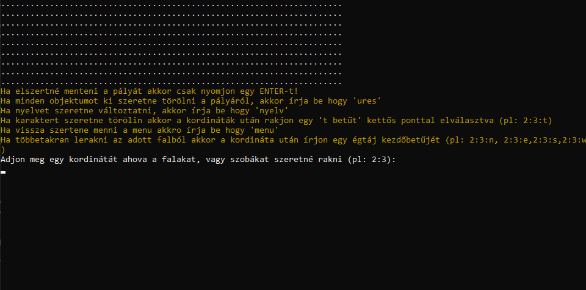

The maze
Hogyan játsz
A kezdőképernyő után a játékos a menübe kerül.
A program alapvetően magyar nyelven indul! De lehetőség van nyelvet váltani. A játék elkdezdéséhez be kell tölteni
egy pályát. A pálya betöltéséhez be kell írnia a fájl nevét.
FONTOS: a fájlnak a pálya mappájában kell lennie!!
A játék lényege hogy meg kell találni a szobákat és kijutni a labirintusból.
A játkos a W(fel) A(balra) S(le) D(jobbra) betük lenyomásával tud mozogni.
A játék jelenlegi állását bármikor lehetőség van lementeni, amihez szükséges megadni a fájl nevét és kiterjesztését.
A készítésről
A játékot készítette: Gajdos Csanád.
"Az idő szorossága miatt nehéz volt."
Pálya szerkeztő
Útmutató
A program elindításakor a játékost kezdőképernyő fogadja.
Itt választható a program nyelvezete a "magyar" vagy "angol" szavak beírásával.
A következő képernyőn lehetőség van:
- 1. térképet létrehozni
- 2. térképet betölteni
- 3. nyelvet váltani
- 4. kilépni
Amennyiben a térkép létrehozását választotta, meg kell adnia a pálya méretét, ami alapján létrehozza a pályát.
A pályára kedve szerint rakhat pályaelemeket a koordináta és az elem beírásával.
Valamint lehetőség van menteni, kiüríteni a pályát, illetve karaktert törölni.

Ha a térkép betöltését választotta, meg kell adnia a fájl nevét.
FONTOS: a pálya betöltéséhez a fájlnak a program mappájában kell lennie!
A készítésről
A pálya szerkeztőt készítette Beke Tamás.
"Voltak nehézségek, de magyrészt leküzdöttem őket."